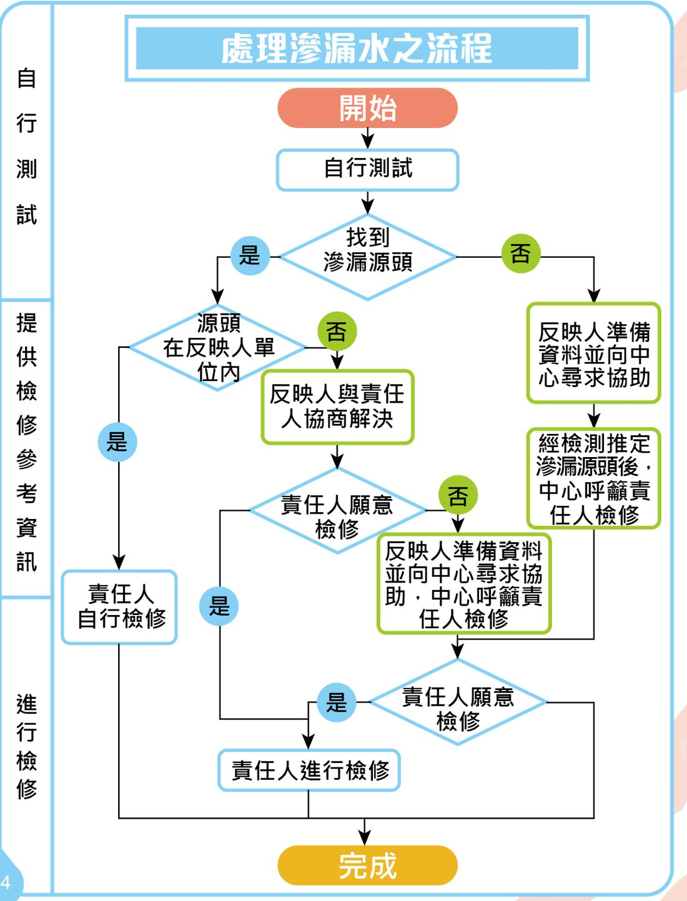

2
自行檢測滲漏水流程圖
下圖是刊物第 24 頁的官方「處理滲漏水之流程」。右邊是同一流程的文字版，方便在手機上閱讀。

- 開始 → 自行測試
分辨清水／污水、關總水掣、睇水錶、放水測試。（一部曲） - 找到滲漏源頭？
是 → 往下走；否 → 反映人準備資料並向中心尋求協助，經檢測推定滲漏源頭後，中心呼籲責任人檢修。 - 源頭在反映人單位內？
是 → 責任人（即自己）自行檢修；否 → 反映人與責任人協商解決。（二部曲） - 責任人願意檢修？
是 → 責任人進行檢修；否 → 反映人準備資料並向中心尋求協助，中心呼籲責任人檢修。 - 責任人進行檢修 → 完成
聘請合資格技工檢修，並在維修後覆檢確認滲漏已停止。（三部曲）
如果走到最後，責任人仍然不願檢修？
刊物提供了兩條後路：① 第 9/2023 號法律《樓宇滲漏水爭議的必要仲裁制度》自 2023 年 9 月 1 日生效，受影響業主可尋求必要仲裁；
② 如被評為「危害公共衛生」，當局有權命令修葺，業主逾期未完成，當局會代為維修，費用由違例小業主負責。